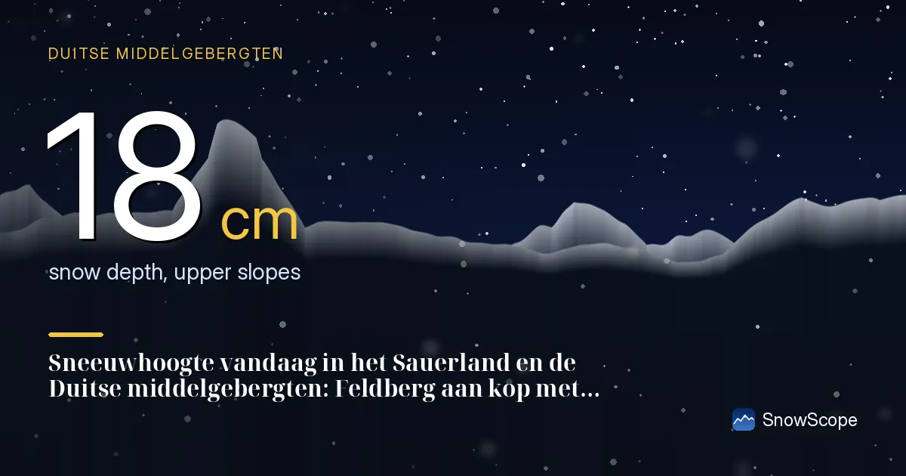

Sneeuwhoogte vandaag in het Sauerland en de Duitse middelgebergten: Feldberg aan kop met 18 cm (22 november)
Feldberg staat dit weekend alleen met 18 cm sneeuw op zijn bovenste hellingen, terwijl Todtnauberg zich aan 13 cm vastklampte. De regio kreeg de afgelopen drie dagen zware sneeuwval, met meer op komst—maar buiten de twee koploper betekent skieerbare omstandigheden werken met dunne ondergronden en verborgen rotsen.
Bekijk de sneeuwverwachting voor Feldberg in de SnowScope-appSneeuwhoogte, alerts en de 3D-kaart, gratis.
Waar de sneeuw werkelijk is
Van de acht skigebieden in deze regio rapporteren slechts drie enige sneeuw. Feldberg op 1.446 m heeft 18 cm, Todtnauberg op 1.374 m heeft 13 cm, en Hahnenklee op 725 m heeft 3 cm bij elkaar geschraapd. De rest—Braunlage, Oberwiesenthal, Winterberg, Willingen en Wurmberg—rapporteer nul of vrijwel geen diepte.
Het patroon is duidelijk: hoogte is van belang. De twee hoogste skigebieden hebben genoeg recente sneeuw gevangen om te skiën. Onder de 1.000 m is de ondergrond te dun om de grond eronder te beschermen. Als je deze week een bezoek overweegt, is hoogte niet onderhandelbaar.
| Skigebied | Sneeuwhoogte | Verse sneeuw, 72 u | Komende dagen | Top |
|---|---|---|---|---|
| Feldberg | 18 cm | 30 cm | 9 cm | 1.446 m |
| Todtnauberg | 13 cm | 23 cm | 9 cm | 1.374 m |
| Hahnenklee | 3 cm | 0 cm | 0 cm | 725 m |
| Braunlage | 0 cm | 2 cm | 0 cm | 817 m |
| Oberwiesenthal | 0 cm | 4 cm | 1 cm | 1.211 m |
| Winterberg | 0 cm | 0 cm | 0 cm | 809 m |

Drie dagen zware sneeuw net voorbij
Feldberg ontving 30 cm verse sneeuw in de 72 uur voor 22 november—veruit het meest in de regio. Todtnauberg ving 23 cm, en Oberwiesenthal pakte 4 cm op. Overal elders zag niets of sporen. Deze sneeuwstorm is de reden dat Feldberg en Todtnauberg nog in het spel zijn.
Die verse sneeuw viel op een dunne vroegseizoen ondergrond, wat twee dingen betekent: ten eerste zal de nieuwe poedersneeuw zacht en grijpend zijn op de geprepareerde pistes, vooral op steiler terrein; ten tweede louren rotsen en stompen net onder het oppervlak. Was je ski's voor je gaat, en blijf op gemarkeerde pistes tenzij je het lawinebercht hebt gecontroleerd en de helling kent.
Wat komt er in de komende drie dagen
Tegen 25 november laat SnowScope 9 cm meer sneeuw zien op zowel Feldberg als Todtnauberg. Oberwiesenthal wint 1 cm. De lagere skigebieden zullen weinig of niets zien.
Negen centimeter is geen game-changer op beide topskigebieden, maar het zal de pistes verfris en helpen de ondergrond bij elkaar houden. Als je tussen nu en 25 november kunt bezoeken, ga dan vroeg in de week om de nieuwe sneeuw te skiën als hij het frist is; later in de week zal zon en verkeer hem verzachten.
Feldberg of Todtnauberg: hoe kiezen
Feldberg heeft 5 cm meer diepte (18 cm versus 13 cm) en bereikt 72 m hoger. De bovenste hellingen behouden sneeuw langer en skiën betrouwbaarder. Als je slechts één dag hebt, is Feldberg de veiliger keuze.
Todtnauberg is de moeite van het rijden waard als je een rustiger berg verkiest of omstandigheden naast elkaar wilt vergelijken. Het verschil in basisdiepte is klein genoeg dat sneeuwkwaliteit, niet hoeveelheid, je dag zal bepalen. Beide liften bereiken goed boven de 1.300 m, waar de lucht koud blijft.
De werkelijkheid van vroeg seizoen toerisme
Dunne sneeuw op rotsen betekent dat je eerste afdalingen tellen. Blijf op geprepareerde pistes waar de sneeuw is bewerkt en verdicht. Off-piste skiën is alleen mogelijk nadat je het lokale lawinebercht hebt gelezen en hellingen hebt gekozen die je goed kent—een nieuwe route is niet het risico waard als de ondergrond zo kwetsbaar is.
Verse sneeuw op ondiepe ondergrond betekent ook dat de ski's sneller een kant pakken. Breng was mee, controleer je kanthoeken voor je vertrekt, en verwacht dat het oppervlak meer zal variëren dan in diepere winter. Wat voelt grijpend aan op 9 uur 's ochtends kan kleverig worden tegen de middag als de zon zelfs deze hoge hellingen raakt.
Je trip vanuit Nederland plannen
Sauerland ligt drie tot vier uur rijden vanaf het meeste van Nederland, wat het een één- of tweedaagse optie maakt. Feldberg is nu een weekendtrip waard omdat het de diepte en de verwachting heeft; een werkdagbezoek in de komende dagen zal minder rijen en frisere sneeuw aan de top betekenen.
Winterbanden of kettingen zijn verplicht voor de laatste kilometers naar beide skigebieden. Vertrek vroeg om zondag verkeer aan de grens en liften voor te blijven. Tegen 25 november, als de verwachting klopt, zal de sneeuw een klein beetje dieper en iets meer gestabiliseerd zijn—goede reden om je bezoek voor het einde van deze week in te plannen.
Tips voor skiërs
- Rij naar Feldberg als je slechts één dag hebt. Zijn 18 cm en grotere hoogte geven je de beste kans op doorlopende afdalingen zonder rots te raken.
- Monteer winterbanden of kettingen voor je vertrekt. De weg naar 1.446 m wordt snel glad in november.
- Was je ski's de avond ervoor. Verse sneeuw op een dunne ondergrond is schuurachtig en zal je vertragen zonder.
- Controleer het lokale lawinebercht voor je ergens off-piste gaat skiën. Het lawinnerisico in het vroeg seizoen is laag maar reëel, en rotsen verborgen onder 30 cm nieuwe sneeuw zijn een groter gevaar nu.
- Vertrek vroeg en ga eerst naar de bovenste hellingen. De zon zal het oppervlak zachter maken naarmate de dag vordert, dus ski de beste sneeuw terwijl hij nog stevig is.
About these numbers
Resort snow depths are the deepest snow on the resort's upper slopes on the date shown; they are estimates for an area, not a measurement at one point. Forecasts can change. Always read the official avalanche bulletin before going off-piste.
Cite this report
For research, teaching or the press: the numbers and charts are free to reuse under CC BY 4.0 with this citation.
SnowScope (2026), Sneeuwhoogte vandaag in het Sauerland en de Duitse middelgebergten: Feldberg aan kop met 18 cm (22 november), https://snowscope.app/blog/nl/2026/11/sneeuw-sauerland-winterberg-22-november-2026.html, accessed 2026-11-22
SnowScope (Atlas Labs). (2026, November 22). Sneeuwhoogte vandaag in het Sauerland en de Duitse middelgebergten: Feldberg aan kop met 18 cm (22 november). SnowScope snow reports. https://snowscope.app/blog/nl/2026/11/sneeuw-sauerland-winterberg-22-november-2026.html
BibTeX
@misc{snowscope2026sneeuwsauerlandwinterber,
author = {{SnowScope (Atlas Labs)}},
title = {Sneeuwhoogte vandaag in het Sauerland en de Duitse middelgebergten: Feldberg aan kop met 18 cm (22 november)},
year = {2026},
month = nov,
howpublished = {\url{https://snowscope.app/blog/nl/2026/11/sneeuw-sauerland-winterberg-22-november-2026.html}},
note = {Published 2026-11-22 11:49 UTC; accessed 2026-11-22}
}· CC BY 4.0 · Methods, data and tools →
Feldberg: snow and temperature by height, this winter vs last (tools) →
Follow Feldberg
Gratis: een bericht als er verse sneeuw komt, en elke ochtend de verwachting.